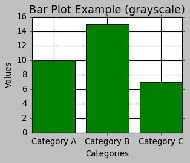
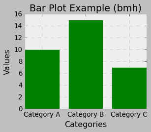
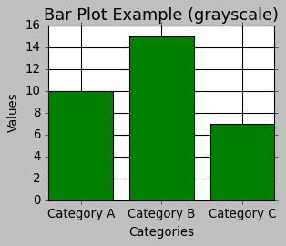
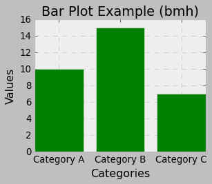

6.2. Matplotlib Styles#
Matplotlib provides various styles that allow you to change the visual appearance of your plots. Styles control things like colors, fonts, gridlines, and more. Here’s how you can use different styles in Matplotlib [Pajankar, 2021, Matplotlib Developers, 2024]:
6.2.1. Default Style#
Matplotlib includes a default style applied when you create a plot. Nevertheless, you can explicitly define it using plt.style.use(). You can find a comprehensive description of this function here.
import matplotlib.pyplot as plt
# Set the default style
plt.style.use('default')
# Your plotting code here
plt.plot([1, 2, 3, 4, 5], [2, 4, 6, 8, 10])
plt.show()
6.2.2. Predefined Styles#
Here’s an expanded list of some of the predefined styles available in Matplotlib, along with brief descriptions of their characteristics:
‘default’ (Default):
The default style that Matplotlib applies.
Balanced and simple, suitable for most basic plots.
‘ggplot’:
Emulates the aesthetics of the popular ggplot2 library in R.
Features a gray background, gridlines, and bold lines.
‘seaborn’:
Emulates the aesthetics of the Seaborn library, which builds on top of Matplotlib.
Cleaner and more modern look, often used for statistical data visualization.
‘fivethirtyeight’:
Mimics the style used by the FiveThirtyEight website.
Bold lines, distinctive colors, and prominent data points.
‘dark_background’:
Ideal for dark-themed visualizations.
Dark background with light-colored lines and text.
‘classic’:
Emulates the classic Matplotlib style from earlier versions.
Simpler and less colorful, useful for traditional publication-style plots.
‘Solarize_Light2’:
Light-colored style inspired by the Solarized color palette.
Pleasant for presentations and documents.
‘fast’:
Optimized for faster rendering of large datasets.
Minimalist and quick to generate.
‘tableau-colorblind10’:
Uses a color palette designed to be distinguishable for people with color vision deficiencies.
Suitable for ensuring accessibility of your visualizations.
‘grayscale’:
Creates plots in grayscale, suitable for printing in black and white.
Useful when color is not an option.
‘bmh’ (Bayesian Methods for Hackers):
Created for the Bayesian Methods for Hackers book.
Clear and easy-to-read style.
You can see the full list of available styles using the following command:
import matplotlib.pyplot as plt
print(plt.style.available)
['Solarize_Light2', '_classic_test_patch', '_mpl-gallery', '_mpl-gallery-nogrid', 'bmh', 'classic', 'dark_background', 'fast', 'fivethirtyeight', 'ggplot', 'grayscale', 'seaborn-v0_8', 'seaborn-v0_8-bright', 'seaborn-v0_8-colorblind', 'seaborn-v0_8-dark', 'seaborn-v0_8-dark-palette', 'seaborn-v0_8-darkgrid', 'seaborn-v0_8-deep', 'seaborn-v0_8-muted', 'seaborn-v0_8-notebook', 'seaborn-v0_8-paper', 'seaborn-v0_8-pastel', 'seaborn-v0_8-poster', 'seaborn-v0_8-talk', 'seaborn-v0_8-ticks', 'seaborn-v0_8-white', 'seaborn-v0_8-whitegrid', 'tableau-colorblind10']
You can explore these styles and find the one that best suits your data and presentation needs. Remember that each style can be used to quickly change the overall appearance of your plots, making it easy to experiment with different visualizations. To use a predefined style, simply call plt.style.use('style_name') before creating your plot.
Table 6.1 lists the predefined styles available in Matplotlib along with brief descriptions of each style. We can apply any of these styles using the plt.style.use('style_name') function before creating your Matplotlib plots.
Style Name |
Description |
|---|---|
|
A light theme with solarized colors. |
|
A style used for testing classic Matplotlib settings. |
|
A style designed for the Matplotlib gallery. |
|
Similar to |
|
A style inspired by the Bayesian Methods for Hackers book. |
|
The classic Matplotlib style, resembling older versions of Matplotlib. |
|
A style with a dark background and bright colors. |
|
A style optimized for speed, with minimal elements. |
|
A style inspired by the FiveThirtyEight website. |
|
A style inspired by ggplot in R, with a clean and modern look. |
|
A style with all elements in shades of gray. |
|
The default Seaborn style, providing a clean and modern look. |
|
A bright and colorful Seaborn style. |
|
A Seaborn style optimized for colorblind accessibility. |
|
A dark Seaborn style with muted colors. |
|
A Seaborn style with a dark color palette. |
|
A Seaborn style with a dark background and grid lines. |
|
A Seaborn style with deep, rich colors. |
|
A Seaborn style with muted, soft colors. |
|
A Seaborn style optimized for Jupyter notebooks. |
|
A Seaborn style optimized for paper publications. |
|
A Seaborn style with pastel colors. |
|
A Seaborn style optimized for posters and presentations. |
|
A Seaborn style optimized for talks and presentations. |
|
A Seaborn style with ticks on the axes. |
|
A Seaborn style with a white background. |
|
A Seaborn style with a white background and grid lines. |
|
A colorblind-friendly style inspired by Tableau’s color schemes. |
Example:
import matplotlib.pyplot as plt
# List of different styles
styles = ['ggplot', 'fivethirtyeight', 'dark_background', 'classic', 'Solarize_Light2', 'grayscale', 'bmh']
# Loop through each style
for style in styles:
# Apply the current style
plt.style.use(style)
# Sample data
categories = ['Category A', 'Category B', 'Category C']
values = [10, 15, 7]
# Create a new figure with a specified size
plt.figure(figsize=(4, 3))
# Create a bar plot with sample data and green color
plt.bar(categories, values, color='green')
# Add labels and title
plt.xlabel('Categories')
plt.ylabel('Values')
plt.title('Bar Plot Example ({})'.format(style))
# Display the plot
plt.show()
 



In addition to the built-in styles, you can create your own custom styles, as described in the previous responses. Custom styles allow you to define specific visual configurations and easily reuse them in different plots.
Remember that the availability and appearance of styles may change with updates to Matplotlib. Always refer to the official documentation for the latest information on available styles and their usage.
6.2.3. Creating Custom Styles#
Creating custom styles in Matplotlib allows you to define your own set of visual configurations that can be easily applied to your plots for consistency and aesthetics. To create a custom style, follow these steps:
6.2.3.1. Choose a Style Name#
Choose a unique name for your custom style. It’s a good practice to use a descriptive name to remember its purpose.
6.2.3.2. Create a .mplstyle File#
Create a plain text file with the .mplstyle extension. For example, let’s create a file named mystyle.mplstyle.
6.2.3.3. Edit the .mplstyle File#
Open the mystyle.mplstyle file in a text editor and specify the custom settings you want to apply to your plots. Each line in the file should be in the format of key: value, where the key represents the style parameter, and the value is the desired setting for that parameter. Here’s an example of the content of mystyle.mplstyle:
# mystyle.mplstyle
lines.linewidth: 2.5
lines.markersize: 8
axes.labelsize: 16
xtick.labelsize: 14
ytick.labelsize: 14
axes.grid: True
axes.grid.which: both
axes.grid.axis: both
grid.color: gray
grid.linestyle: --
In this example, we are customizing the line width, marker size, label sizes, enabling grid with gray color, and dashed lines for both x and y axes.
6.2.3.4. Use the Custom Style#
Now that you have defined your custom style in the .mplstyle file, you can use it in your Matplotlib code.
import matplotlib.pyplot as plt
# Use the custom style
plt.style.use('default')
plt.style.use('mystyle.mplstyle')
# Sample data
categories = ['Category A', 'Category B', 'Category C']
values = [10, 15, 7]
plt.figure(figsize=(5, 4))
# Create a bar plot
plt.bar(categories, values, color='green')
# Add labels and title
plt.xlabel('Categories')
plt.ylabel('Values')
plt.title('Bar Plot Example (mystyle)')
# Display the plot
plt.show()
This will apply your custom style to the plot, and you can see the changes you defined in the mystyle.mplstyle file.
You can create multiple custom styles for different purposes and easily switch between them depending on the type of plots you want to create. Remember to keep the .mplstyle file in the same directory as your script or notebook, or you can specify the file path if it’s located elsewhere.
6.2.4. Modifying Default Styles#
To modify Matplotlib’s default settings using a dictionary, you can employ the matplotlib.rc() function (you can find the complete description here). This function enables you to establish or revise various Matplotlib configuration parameters collectively by supplying a dictionary containing key-value pairs.
Here is the process for altering Matplotlib settings using a dictionary:
import matplotlib.pyplot as plt
# Reset styles to default (clear any previously applied styles)
plt.style.use('default')
# Define a dictionary with the custom settings
custom_settings = {
'lines.linewidth': 2.5,
'lines.markersize': 8,
'axes.labelsize': 16,
'xtick.labelsize': 14,
'ytick.labelsize': 14,
'axes.grid': True,
'axes.grid.which': 'both',
'axes.grid.axis': 'both',
'grid.color': 'gray',
'grid.linestyle': '--'
}
plt.figure(figsize=(5, 4))
# Update the Matplotlib settings using the dictionary
plt.rcParams.update(custom_settings)
# Now create your plot with the updated settings
plt.plot([1, 2, 3, 4, 5], [2, 4, 6, 8, 10], label='Line 1')
plt.plot([1, 2, 3, 4, 5], [10, 8, 6, 4, 2], label='Line 2')
plt.xlabel('X-axis')
plt.ylabel('Y-axis')
plt.title('Custom Line Plot')
plt.legend()
plt.show()

In this example, we used the plt.rcParams.update(custom_settings) line to update the Matplotlib settings using the dictionary custom_settings. Now, when you create plots, the custom settings specified in the dictionary will be used.
The advantage of using plt.rcParams.update() is that it allows you to customize a wide range of settings beyond just the ones available in the style files. You can use this approach to fine-tune the appearance of your plots according to your preferences.